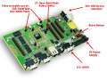
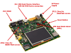
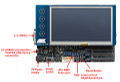

Older boards
Getting Started for AT91SAM9x5-EK
- AT91SAM9x5-EK page
Getting Started for SAMA5D3-EK
- SAMA5D3-EK page
Getting Started for SAMA5D4-EK
- SAMA5D4-EK page
Getting Started SAM9
Introduction
This page is a starting point for the Linux4SAM offer and allows you to easily get a running embedded Linux distribution on AT91 products. This Getting started describes also how a Linux4SAM system boots and how binaries are installed on FLASH memories. For each topic a more detailed section exists with in-depth description, valuables web links, source code how to rebuild used binaries. Click on the image up above to select a topic.
Click on the image up above to select a topic.
Boot sequence
Several pieces of software are involved to boot a linux kernel on SAM products. First is the ROM code which is in charge to check if a valid application is present on supported media (FLASH, DATAFLASH, NANDFLASH, SDCARD). The boot sequence of linux4SAM is done in several steps :- Boot Program - ROM Code - Checks if a valid application is present in FLASH and if it is the case downloads it into internal SRAM.
For more information on this topic, please check the Boot strategies section and particularly the Boot capabilities matrix. - AT91Bootstrap - In charge of hardware configuration, downloads U-Boot binary from FLASH to SDRAM / DDRAM, starts the bootloader (third level bootloader actually)
- U-Boot - The bootloader, in charge of downloading kernel binaries from FLASH, network, SD card, etc. It then loads the Device Tree Binary and starts the Linux kernel.
- Linux kernel - The kernel of the Operating System.
- Root Filesystem - Contains applications which are executed on the target, using the OS kernel services.

Linux4SAM NandFlash demo - Memory map

Requirements
Hardware
- a Windows XP host (or later) or a Linux distribution to run the SAM-BA tool ;
- power supply stocked with the Evaluation Kit ;
- USB or micro-USB Device Cable ;
- serial Cross Cable (Female-Female) or a type A-micro-B USB cable ;
- the Evaluation Kit. Check below how kits look like and how to connect them :
| AT91SAM9G20-EK | AT91SAM9M10G45-EK | AT91SAM9x5-EK {{*AT91SAM9x5-EK*: common board for every AT91SAM9x5 chip in the family.}} |
|---|---|---|
|  |  |  |
| AT91SAM9N12-EK {{*AT91SAM9N12-EK*: common board for every AT91SAM9N1x, AT91SAM9CN1x chip in the family.}} | ||
|  |
Software
- a serial terminal emulator (HyperTerminal, minicom, etc.) :
- sama5d2 revision A, only to access the ROMCode through serial interface and see the
RomBOOTmessage appearing, configure your serial line to 57600.
Change it back to 115200 for normal operation.
All components and demo binaries are now configured to work at115200 8-N-1.
115200 8-N-1 :
| Baud rate | 115200 |
| Data | 8 bits |
| Parity | None |
| Stop | 1 bit |
| Flow control | None |
- the SAM-BA tool => Check the SoftwareTools#SAM_BA page ;
- the demo archive provided just below. This archive contains :
- all components binaries : AT91Bootstrap, U-Boot, the Device Tree Binary, Linux kernel, root filesystem ;
- a TCL/SAM-BA script that interfaces with the SAM-BA tool to flash the demo ;
- a
.bator.shscript able to run the flashing script calling SAM-BA itself.
Demo archives
| Board | Description | Binary | Sources location |
|---|---|---|---|
| AT91SAM9X5-EK | Linux4SAM BuildRoot based demo | linux4sam-buildroot-at91sam9x5ek_linux4sam_4.2.zip md5: 74b6cf2b9d2238419c76661ceda5d34c |
AT91Bootstrap U-Boot Linux Kernel BuildRoot |
| AT91SAM9M10G45-EK | Linux4SAM BuildRoot based demo | linux4sam-buildroot-at91sam9m10g45ek_linux4sam_4.2.zip md5: 23231be8b30c23441d767b3b848a9871 |
AT91Bootstrap U-Boot Linux Kernel BuildRoot |
| AT91SAM9G20-EK | Linux4SAM BuildRoot based demo | linux4sam-buildroot-at91sam9g20ek_linux4sam_4.2.zip md5: 50498d0c36b4b5c213e82edd57737ca3 |
AT91Bootstrap U-Boot Linux Kernel BuildRoot |
| Old binaries | linux4sam demo directory |
|---|
Flashing a demo on AT91 boards
Before flashing the demo, make sure that you have installed the SAM-BA tool on your host computer. Then you will have to choose the proper procedure depending on the Evaluation Kit that you have. Note however that the procedure is extremely similar whichever EK board you may choose.| Flashing AT91SAM9G20-EK | Flashing AT91SAM9M10G45-EK | Flashing AT91SAM9x5-EK |
 |
||
| Flashing AT91SAM9N12-EK | ||
Recent FAQ
- Older SAM9 boards
-
• Build Linux Ssl: Kernel Compilation Error related to OpenSSL. (Kernel)
• Iio Adc Driver: Adc IIO driver introduction. (Kernel, linux-3.10-at91, linux-3.18-at91, linux-4.1-at91, linux-4.4-at91, linux-4.9-at91, linux-4.14-at91, linux-4.19-at91, linux-5.4-at91)
• USBGadget Config: Configure AT91 USB Gadget on Linux and Endpoint order management (composite USB). (Kernel, linux-4.4-at91, linux-4.9-at91, linux-4.14-at91, linux-4.19-at91, linux-5.4-at91)
• Real Time: Enable Real Time support for AT91SAM9 Soc. (Kernel)
• Audio Record On At 91 sam 9 g 20 ek: Audio Record on At91sam9g20ek. ()
• SAM 9 M 10 Gstreamer: M10 Vdec support. ()


r41 - 03 Dec 2019 - 16:06:31 - NicolasFerre

{kind=link}
{kind=link}
{kind=link}
{kind=link}
{kind=link}
{kind=link}
{kind=link}
{kind=link}
{kind=link}
{kind=link}
{kind=link}
{kind=link}
{kind=link}
{kind=link}
{kind=link}
{kind=link}
{kind=link}
{kind=link}
{kind=link}
{kind=link}
{kind=link}
{kind=link}
{kind=link}
{kind=link}
{kind=link}
{kind=link}
{kind=link}
{kind=link}
{kind=link}
{kind=link}
{kind=link}
{kind=link}
{kind=link}
{kind=link}
{kind=link}
{kind=link}
{kind=link}
Copyright © by the contributing authors. All material on this collaboration platform is the property of the contributing authors.
Linux® is the registered trademark of Linus Torvalds in the U.S. and other countries.
Microchip® and others, are registered trademarks or trademarks of Microchip Technology Inc. and its subsidiaries. 
Arm® and others are registered trademarks or trademarks of Arm Limited (or its affiliates). Other terms and product names may be trademarks of others.
Ideas, requests, contributions ? Connect to LinksToCommunities page.